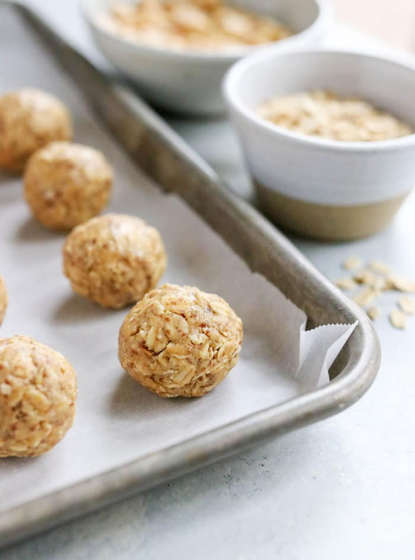

Peanut Butter Protein Balls

5-Minute Protein Peanut Butter Energy Bites
No bake protein packed peanut butter energy bites that taste like peanut butter cookie dough with an amazing chewy texture. These healthy peanut butter energy bites are loaded with nutritious ingredients like flaxseed, chia and oats for the perfect no bake snack.
This simple little snack will help you keep going all day long.
Ingredients
- Peanut Butter
- Oats
- Flaxseed meal
- Chia seeds
- Vanilla extract
- Protein powder
- Cinnamon
- Mini chocolate chips
Steps
- With a food processor: add in the peanut butter, honey, vanilla, protein powder, flaxseed meal, oats, cinnamon and chia seeds. Pulse together until well combined. Add in chocolate chips (and coconut if using) and pulse a few more times. Use a medium cookie scoop or your hands to grab dough and roll into 10 balls.
- Without a food processor: add wet ingredients to a medium bowl, mix to combine. Add in dry ingredients and mix together until combined. I usually have to use my hands to mix and work with the dough. At this point you should be able to form balls that stick together. You may need to add a bit more nut butter and/or sweetener to help them stick together.